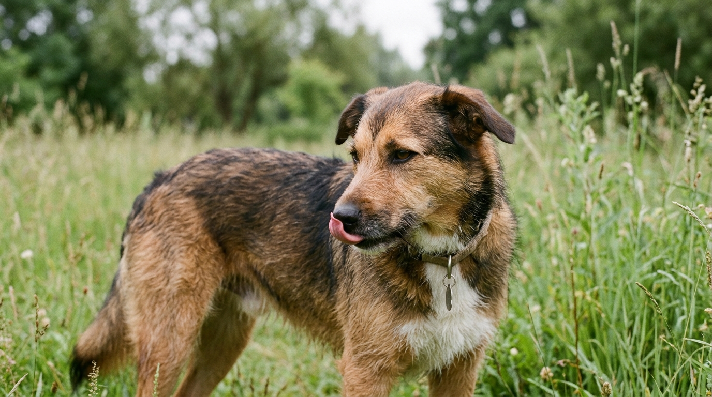

1. Mover la cola no siempre significa felicidad
Uno de los malentendidos más frecuentes entre humanos y perros es creer que cualquier movimiento de cola equivale a "estoy contento, acércate". En realidad, el movimiento de la cola mide el nivel de activación emocional (arousal), no necesariamente alegría.
- Cola relajada a media altura o haciendo helicóptero amplio: Alegría genuina, confianza y disposición al contacto amigable.
- Cola alta, rígida y vibrando con movimientos cortos: Alerta elevada, tensión o posible reactividad.
- Cola baja o metida entre las patas: Miedo, inseguridad o malestar físico.
2. Las señales de calma: cómo tu perro evita conflictos
La investigadora noruega Turid Rugaas documentó más de 30 señales de apaciguamiento o calma que los perros utilizan para decir "no quiero problemas" o "me siento un poco incómodo". Las más importantes son:
- Lamerse la trufa (nariz) rápidamente: Muy común cuando los abrazamos fuerte o nos inclinamos sobre ellos con una cámara.
- Bostezar fuera de contexto de sueño: En la sala de espera del veterinario o ante gritos en casa.
- Girar la cabeza o desviar la mirada ("Ojo de ballena"): Cuando se ve el borde blanco de sus ojos mientras mantiene la cabeza quieta.
- Olfatear el suelo repentinamente: Cuando otro perro se acerca de frente, olfatear el pasto comunica intenciones pacíficas.
- Sacudirse como si estuviera mojado: Es su manera de "resetear" el sistema nervioso tras un momento de tensión.
3. Tabla de señales según el estado emocional
| Estado Emocional | Señales Corporales Visibles |
|---|---|
| 🟢 Relajado y Feliz | Cuerpo suelto y ondulante, boca entreabierta, orejas en posición natural, mirada suave. |
| 🟡 Incómodo / Estrés Leve | Orejas hacia atrás, bostezo, relamido de nariz, levantar una pata delantera, dar la espalda. |
| 🟠 Miedo / Alerta Alta | Cuerpo congelado (freezing), pupilas dilatadas, boca cerrada tensa, pelo erizado en el lomo. |
4. Cómo distinguir el juego sano de una pelea
Durante el juego saludable entre dos perros verás la famosa reverencia de juego (codos pegados al suelo y cadera levantada), movimientos exagerados y "autocontrol" con pausas cada pocos segundos para comprobar que el otro perro sigue divirtiéndose.
5. Qué hacer cuando tu perro pide espacio
Si notas dos o más señales de calma seguidas, dale distancia inmediata respecto al estímulo que lo incomoda, háblale en tono suave y permítele elegir si quiere interactuar o retirarse a su cama segura.
📚 Referencias Científicas y Fuentes Clínicas
- Rugaas, T. (2006). On Talking Terms with Dogs: Calming Signals (2nd ed.). Dogwise Publishing, Wenatchee, WA.
- Overall, K. L. (2013). Manual of Clinical Behavioral Medicine for Dogs and Cats. Elsevier Health Sciences, St. Louis, MO.
- Mariti, C., et al. (2017). The assessment of 'calming signals' in domestic dogs (Canis familiaris) during human-dog interactions. Journal of Veterinary Behavior: Clinical Applications and Research, 18, 97-98.
¿Buscas apoyo profesional para tu perro?
Consulta educadores caninos, etólogos y guarderías sin jaulas en tu ciudad dentro de nuestro directorio.
Ver educadores y etólogos